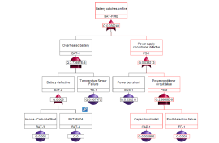
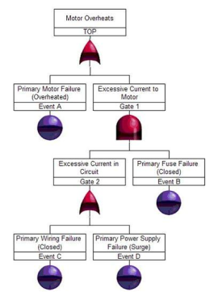

Introduction
 Fault tree analysis is often used as an effective means to assess system risk. By targeting a specific high-level event, such as a catastrophic failure or safety hazard, a fault tree can be constructed to assess the likelihood that this undesired (top) event will occur. Fault tree analysis can be performed using either a quantitative or a qualitative approach. In the quantitative approach, the numerical probabilities of specific events under analysis are determined. Using a qualitative approach, the analyst looks at specific events that individually, or in conjunction with other events, can cause the top event to occur. Both methods are efficient and effective, and the selection of the analysis approach to use depends on your specific needs as well as the system data you have on hand.
This article takes a closer look at the qualitative approach to fault tree analysis: the determination of the cut sets of a fault tree. Once the cut sets of a fault tree are found, this information can be used to find ways to lower the probability of the top event from occurring, which lowers overall system risk.
A cut set is any combination of fault tree events, which if they all occur, will cause the top event to occur. A minimal cut set is the smallest set of events, which if they all occur, will cause the top event to occur. In most instances, minimal cut sets are the essential items of interest to the fault tree analyst. This article uses the term “cut set” as a generic term to refer to a minimal cut set.
Methods to Determine Cut Sets
 Cut sets can be determined by various methods. Popular methods include:
- Inspection
- MOCUS (Method of Obtaining Cut Sets
- MICSUP (Minimal Cut Sets Upwards)
- ZBDD (Zero-Suppressed Binary Decision Diagrams)
Each of these cut set generation approaches has its own unique methodology. This article describes the Inspection method and the MOCUS, MICSUP, and ZBDD cut set generation algorithms. While the Inspection method requires a manual visual review of fault trees to find cut sets, cut set generation algorithms are automated mathematical approaches for easily finding cut sets for even the most complicated fault trees. After demonstrating how the inspection method is used, this article provides examples of how the MOCUS and MICSUP algorithms generate cut sets for the same simple fault tree. A more detailed discussion on the ZBDD cut set generation algorithm will appear in a later article.
Throughout this paper, the fault tree shown in Figure 2 is used for example purposes. It is a simple fault tree that can be used to identify the likelihood and means by which a motor will overheat. Working from the top down, the overheating could be the result of the motor itself overheating and/or there being excessive current to the motor. The excessive current to the motor is caused by excessive current in the circuit and primary fuse failure. Finally, there is excessive current when there is a wiring failure and/or a power supply failure.
Inspection Method
The inspection method requires that you identify all cut sets through a visual review of the fault tree diagram. In the fault tree in Figure 1, fault tree events are designated by the circles, and gates are designated by their logic symbols.
To determine the cut sets for this fault tree, you must first find all the events in the fault tree. There are four events: A, B, C, and D. Next, you must figure out how these events in combination could cause the top event, Motor Overheats, to occur.
First, you can tell that Event A occurring by itself can cause the motor to overheat, so this is one cut set.
Second, you can tell that Gate 1 occurring can cause the motor to overheat as well. The events that can cause Gate 1 to occur are Event B in conjunction with Gate 2 (due to Gate 1 being an AND gate, both Gate 2 and Event B must occur together.) Gate 2 can occur as a result of either Event C or Event D. So, the cut sets from this branch are:
- Event B and Event C
- Event B and Event D
By inspection, you can determine that the following is a list of all possible cut sets from our example fault tree:
- Event A
- Event B and Event C
- Event B and Event D
Just by this very simple example, you can see why the Inspection method quickly becomes unmanageable. Once your fault tree grows in complexity, the manual Inspection method becomes cumbersome and error prone. This is why the Inspection method is rarely used in real-world applications and is replaced by more automated methods.
MOCUS Method
MOCUS (Method of Obtaining Cut Sets) is a top-down approach to cut set determination. The MOCUS algorithm was proposed by Fussell and Vesely in 1972. It is based on the observation that OR gates increase the quantity of cut sets, while AND gates increase the size of cut sets.
The MOCUS algorithm is defined as follows:
- Assign a unique identifier to each gate and event, making sure to use the same identifier for repeated events.
- Proceed stepwise from the top event downward, listing the identifiers, where the initial entry in the list is the identifier of the top event.
- Replace each intermediate event (any gate) with the proper identifier based on the tree logic:
- If the list contains the identifier of an OR gate, then create multiple lists of events by replacing the identifier with the identifier(s) of its input(s).
- If the list contains the identifier of an AND gate, then enlarge the list by replacing the identifier with the identifiers of its inputs.
- Repeat the process until all intermediate identifiers have been resolved.
- Remove any supersets (cut sets that include other cut sets) to obtain minimal cut sets.
Using Figure 2 and the MOCUS algorithm, cut sets can be generated as follows:
- Use the unique identifiers already assigned in Figure 2: TOP, Event A, Gate 1, Gate 2, Event B, Event C, and Event D.
- Proceeding from the top, the cut sets are:
- Event A
- Gate 1
- Event A is already a terminal event, but Gate 1 must be further resolved. Gate 1 (an AND gate) can be replaced with Gate 2 and Event B. So, the cut sets are:
- Event A
- Gate 2 and Event B
- Event B is already a terminal event, but Gate 2 must be further resolved. Gate 2 (an OR gate) can be replaced by Event C or Event D. So, the cut sets are:
- Event A
- Event C and Event B
- Event D and Event B
- At this point, all intermediate events have been resolved, and there are no supersets to remove. So, the TOP event has the three cut sets listed in step 4. Notice how the AND gate logic resulted in larger cut sets, and the OR gate logic resulted in more cut sets. The final list of cut sets using the MOCUS method are:
- Event A
- Event C and Event B
- Event D and Event B
MICSUP Method
JMICSUP (Minimal Cut Sets Upwards) is a bottom-up approach for cut set determination. The MICSUP algorithm was proposed by Pande, Spector, and Chatterjee in the mid 1970s. It works in a similar fashion to the MOCUS method. The MICSUP algorithm is defined as follows:
- Assign a unique identifier to each gate and event, making sure to use the same identifier for repeated events.
- Find cut sets for intermediate events (gates) at the lowest level, specifically those that have only terminal events in their branches.
- Obtain the minimal cut sets of higher-level intermediate events (gates) by substituting the minimal cut sets of lower-level gates.
- Use Boolean reduction rules where necessary to obtain minimal cut sets.
Using Figure 2 and the MICSUP algorithm, cut sets can be generated as follows:
- Use the unique identifiers already assigned in Figure 1: TOP, Event A, Gate 1, Gate 2, Event B, Event C, and Event D.
- Gate 2 is a lowest-level intermediate gate, and its cut sets are:
- Event C
- Event D
- Gate 1 is the next-lowest intermediate gate, and its cut set is Gate 2 and Event B. You already know Gate 2 cut sets. For Gate 1, the cut sets are:
- Event C and Event B
- Event D and Event B
- TOP is the final intermediate gate and, in this case, the top gate. Its cut sets are:
- Event A
- Gate 1
- You already know Gate 1 cut sets. For TOP, the cut sets are:
- Event A
- Event C and Event B
- Event D and Event B
- At this point, all intermediate events have been resolved, and there is no Boolean reduction necessary for this example. So, the resulting cut sets for Figure 1 using the MICSUP method are:
- Event A
- Event C and Event B
- Event D and Event B
Conclusion
Determination of cut sets for small fault trees can be achieved using the simple visual Inspection method. However, for larger, more complex fault trees, cut set generation algorithms must be employed. Cut set generation algorithms can be easily computerized to allow for the determination of cut sets in a reasonable amount of time, even for very large, complex fault trees.
Windchill FTA (formerly Relex FTA) employs cut set generation algorithms to determine cut sets. Windchill FTA supports both qualitative and quantitative analyses and a wide variety of gates and events so that you can model and analyze complex, real-world systems and processes. For additional information about Windchill FTA (formerly Relex FTA) and how it can be used to calculate minimal cut sets, please visit www.crimsonquality.com/fta.